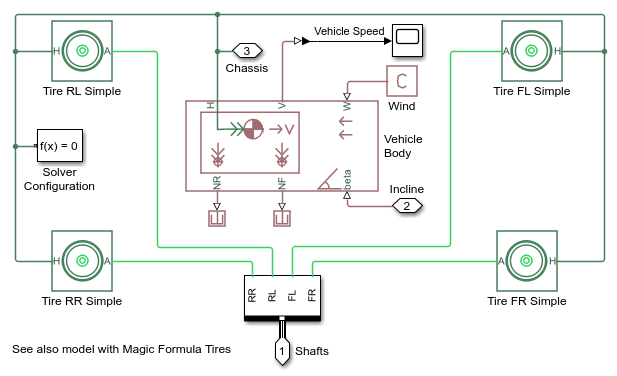
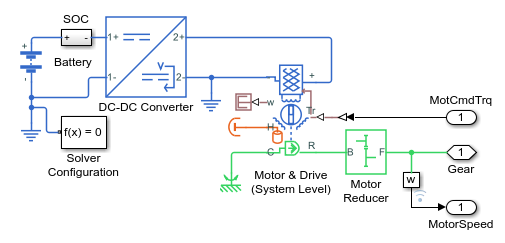
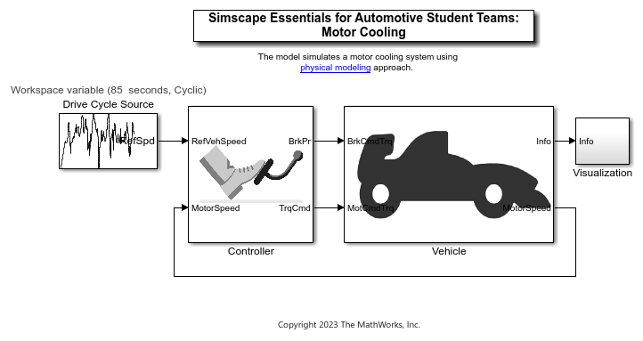
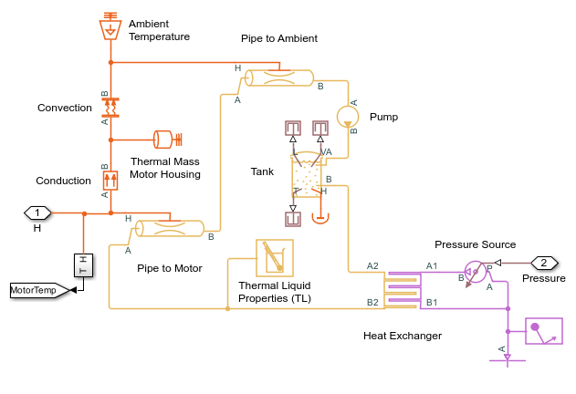

Simscape Essentials for Automotive Student Teams
The repository introduces a set of models to get the automotive student teams started with physical modeling using Simscape. Referring to these models, students participating in competitions (Formula Student, BAJA, Solar Challenge, etc.) can perform powertrain simulations, develop thermal cooling system, battery cooling system, etc.
Click on the links below to open the models.
- Vehicle Longitudinal Motion: longitudinalMotion.slx
- Electric Powertrain: electricPowertrain.slx
- Motor Cooling: motorCooling.slx
Copyright 2023 The MathWorks™, Inc.
Contents
Overview: Vehicle Longitudinal Motion
Vehicle Longitudinal Motion: longitudinalMotion.slx
The model simulates the vehicle motion on a terrain. It consists of a Simscape Vehicle Body block that represents a two-axle vehicle body in longitudinal motion. The model has been used as vehicle body to design to build the powertrain and the cooling system.
Overview: Electric Powertrain
Electric Powertrain: electricPowertrain.slx
The model simulates an electric vehicle model to track a reference drive cycle. It consists of a Simscape Motor and Drive (System Level) block to represents a generic motor and drive operating in torque-control mode, or equivalently current-control mode. Student teams can use this model to size the motor, battery and other electrical components and can also estimate the battery SOC and SOH.
Overview: Motor Cooling
Motor Cooling: motorCooling.slx
The model simulates a motor cooling system. It consists of Simscape™ Fluids™ Thermal Liquid and Gas blocks to model the cooling circuit. Student teams can utilize this model to size the components of the cooling system.
 